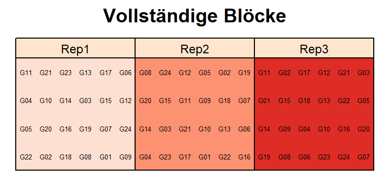

library(data.table) # bessere Datenmanipulation
library(ggplot2); library(ggfortify) # bessere Plots
library(emmeans) # adjustierte MittelwerteDieses Beispiel ist dem Beispiel “1wayANOVA_crd” sehr ähnlich und baut darauf auf. In diesem Feldversuch wurde allerdings der Ertrag von 24 Sorten gemessen, welche auch in 3 Wiederholungen, aber als randomisierte vollständige Blockanlage (=Randomized Complete Block Design) angelegt wurden. Demnach gibt es nun eine zusätzliche Spalte im Datensatz, die Informationen zu den vollständigen Blöcken enthält. Diese Spalte heißt hier “rep” (replicate), da vollständige Blöcke auch oft Wiederholungen genannt werden. Hier mehr Infos zu Versuchsdesigns

print(rcbd, nrows=10)## gen rep yield
## 1: G11 Rep1 4.1172
## 2: G04 Rep1 4.4461
## 3: G05 Rep1 5.8757
## 4: G22 Rep1 4.5784
## 5: G21 Rep1 4.6540
## ---
## 68: G24 Rep3 3.5655
## 69: G03 Rep3 2.8873
## 70: G05 Rep3 4.1972
## 71: G20 Rep3 3.7349
## 72: G07 Rep3 3.6096Erst wollen wir ein Gefühl für den Datensatz bekommen und betrachten einige Kennzahlen zu den Daten, sowie zwei Plots. Im Vergleich zu dem Beispiel “1wayANOVA_crd” erstellen wir diesmal auch einen Boxplot für die Blöcke.
str(rcbd)## Classes 'data.table' and 'data.frame': 72 obs. of 3 variables:
## $ gen : Factor w/ 24 levels "G01",""..
## $ rep : Factor w/ 3 levels "Rep1",""..
## $ yield: num 4.12 4.45 5.88 4.58 4.6..
## - attr(*, ".internal.selfref")=<exter..plot(y=rcbd$yield, x=rcbd$gen, las=2) # las=2 dreht Achsenbeschriftungsummary(rcbd)## gen rep yield
## G01 : 3 Rep1:24 Min. :2.887
## G02 : 3 Rep2:24 1st Qu.:4.110
## G03 : 3 Rep3:24 Median :4.404
## G04 : 3 Mean :4.480
## G05 : 3 3rd Qu.:4.968
## G06 : 3 Max. :5.876
## (Other):54plot(y=rcbd$yield, x=rcbd$rep)Wir können uns nun entschließen die Daten mittels eines linearen Modells zu analysieren. Der Ertrag ist unsere metrische Zielvariable. ‘Sorte’ ist ein qualitativer Faktor. Außerdem haben wir den nun noch den qualitativen Faktor ‘rep’ im Modell.
mod <- lm(yield ~ gen + rep, data=rcbd)Zunächst sollten nun die Residuenplots (z.b. mit autoplot(mod)) evaluiert werden, was hier aber übersprungen wird. Erst dann ist eine Varianzanalyse zulässig.
anova(mod)## Analysis of Variance Table
##
## Response: yield
## Df Sum Sq Mean Sq F value Pr(>F)
## gen 23 14.0765 0.61202 4.5475 6.259e-06 ***
## rep 2 6.1355 3.06774 22.7939 1.322e-07 ***
## Residuals 46 6.1910 0.13459
## ---
## Signif. codes: 0 '***' 0.001 '**' 0.01 '*' 0.05 '.' 0.1 ' ' 1Der F-Test für den Faktor ‘Sorte’ zeigt einen p-Wert < 0.05 und somit signifikante Unterschiede zwischen den Sorten. Demnach wissen wir nun, dass es mindestens einen signifikanten Unterschied zwischen den Sorten gibt, aber nicht zwischen welchen Sorten. Um dies herauszufinden ist es üblich multiple Mittelwertvergleiche durchzuführen (z.B. t-test oder Tukey-test).
Mit emmeans() erhalten wir in einem Zug sowowhl die adjustierten Mittelwerte für jede Sorte, als auch die Differenzen zwischen allen Sortenmittelwerten.
means <- emmeans(mod, pairwise ~ gen, adjust="tukey")
as.data.table(means$emmeans)[1:6,] # 6 der 24 Mittelwerte ## gen emmean SE df lower.CL upper.CL
## 1: G01 5.162500 0.2118065 46 4.736156 5.588844
## 2: G02 4.514200 0.2118065 46 4.087856 4.940544
## 3: G03 3.343067 0.2118065 46 2.916722 3.769411
## 4: G04 4.400667 0.2118065 46 3.974322 4.827011
## 5: G05 5.064367 0.2118065 46 4.638022 5.490711
## 6: G06 4.710333 0.2118065 46 4.283989 5.136678as.data.table(means$contrasts)[1:6,] # 6 der 276 Differenzen## contrast estimate SE df t.ratio p.value
## 1: G01 - G02 0.64830000 0.2995396 46 2.1643215 8.669495e-01
## 2: G01 - G03 1.81943333 0.2995396 46 6.0740994 5.296688e-05
## 3: G01 - G04 0.76183333 0.2995396 46 2.5433476 6.406025e-01
## 4: G01 - G05 0.09813333 0.2995396 46 0.3276139 1.000000e+00
## 5: G01 - G06 0.45216667 0.2995396 46 1.5095388 9.967593e-01
## 6: G01 - G07 1.03256667 0.2995396 46 3.4471791 1.376011e-01Im Vergleich zum Beispiel “1wayANOVA_crd” gibt es hier deutlich mehr Differenzen/paarweise Vergleiche. Das liegt daran, dass wir dort nur 3 Sortenmittelwerte miteinander verglichen haben, während es hier 24 sind. Mit steigender Sortenanzahl n steigt die Anzahl aller möglichen Sortenvergleiche n(n-1)/2 sehr schnell an. Beim Betrachten der p-Werte fällt außerdem wieder auf, dass nicht alle Differenzen signifikant sind. Bei dieser größeren Anzahl Sorten wird deutlich wie hilfreich die Buchstabendarstellung ist, welche wir erneut mit dem CLD() statement erzeugen können.
means <- CLD(means$emmeans, details=TRUE, Letters=letters)
as.data.table(means$emmeans)[1:6,]## gen emmean SE df lower.CL upper.CL .group
## 1: G03 3.343067 0.2118065 46 2.916722 3.769411 a
## 2: G09 3.611600 0.2118065 46 3.185256 4.037944 ab
## 3: G20 3.784867 0.2118065 46 3.358522 4.211211 abc
## 4: G07 4.129933 0.2118065 46 3.703589 4.556278 abcd
## 5: G23 4.136200 0.2118065 46 3.709856 4.562544 abcd
## 6: G24 4.142367 0.2118065 46 3.716022 4.568711 abcdErneut wollen wir die Ergebnisse abschließend in einem Balkendiagramm darstellen. Diesmal nutzen wir aber mehr ggplot-Funktionen als im Beispiel “1wayANOVA_crd”. So kann man generell mit dem theme() statement sehr viele Dinge am Aussehen eines ggplots ändern. Um aber nicht jede Linie, Füllfarbe usw. einzeln bearbeiten zu müssen, kann man auch vorgefertigte Themes nutzen, wie wir hier das theme_bw(). Desweiteren lassen wir die Fehlerbalken diesmal nicht ± Standardfehler abbilden, sondern die Spanne des 95% Konfidenzintervall, die auch schon im emmeans() statement berechnet wurden. Außerdem ordnen wir die Sorten auf der x-Achse diesmal nicht nach Namen, sondern nach ihrem adjustierten Mittelwert. mit dem reorder() statement in der ersten Zeile. Schließlich lassen wir die Information zur Interpretation der Buchstabendarstellung diesmal nicht als caption= unter der Grafik erscheinen, sondern fügen mittles annotate()eine Textbox innerhalb des Diagramms ein. Der Text wird automatisch auf der angegebenen x/y-Koordinate zentriert. Im Satz fügen wir einen Absatz mit der Zeichenfolge \n ein.
ggplot(data=means$emmeans, aes(x=reorder(gen, emmean))) +
geom_bar(aes(y=emmean), stat="identity", width=0.8) +
geom_errorbar(aes(ymin=lower.CL, ymax=upper.CL), width=0.4) +
geom_text(aes(y=(upper.CL)*1.1, label=.group, angle=90)) +
labs(y="Adjustierter Ertragsmittelwert mit 95% Konfidenzintervall", x="Sorte") +
theme_bw() +
annotate(geom="label", y=1, x=12, size=3, color="grey50", fill="white",
label="Mittelwerte, die mit einem gemeinsamen Buchstaben versehen sind,\n sind laut Tukey-test nicht signifikant voneinander verschieden.")